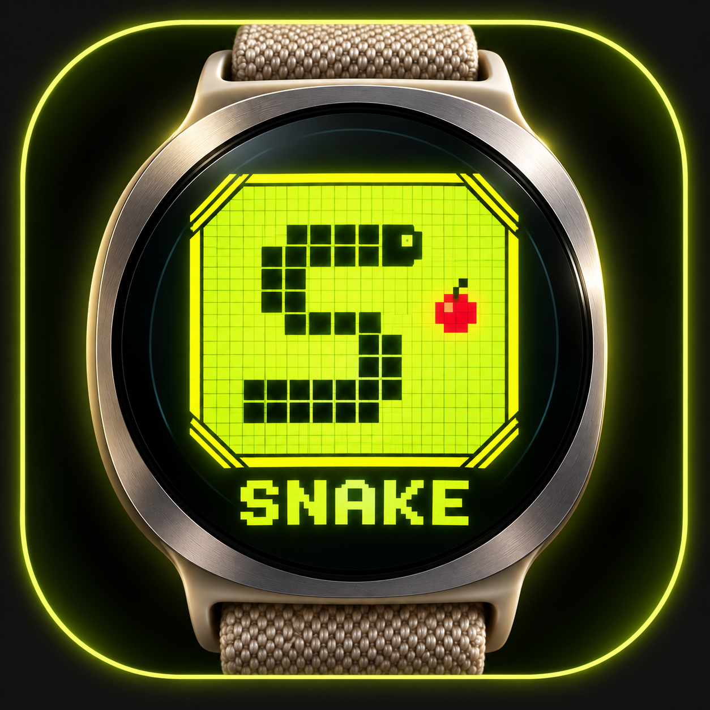
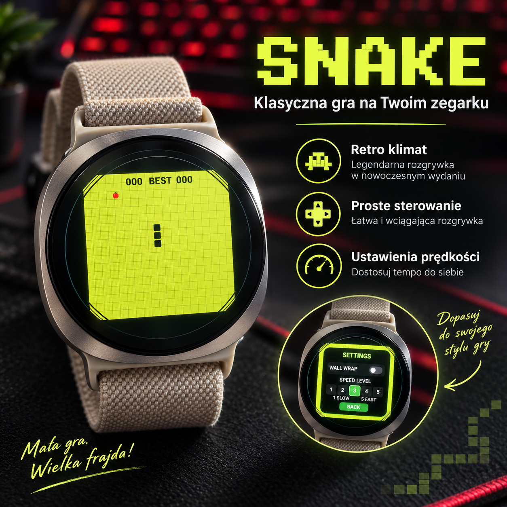
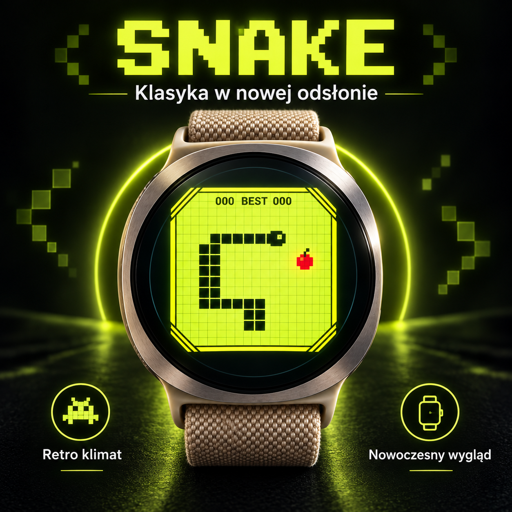
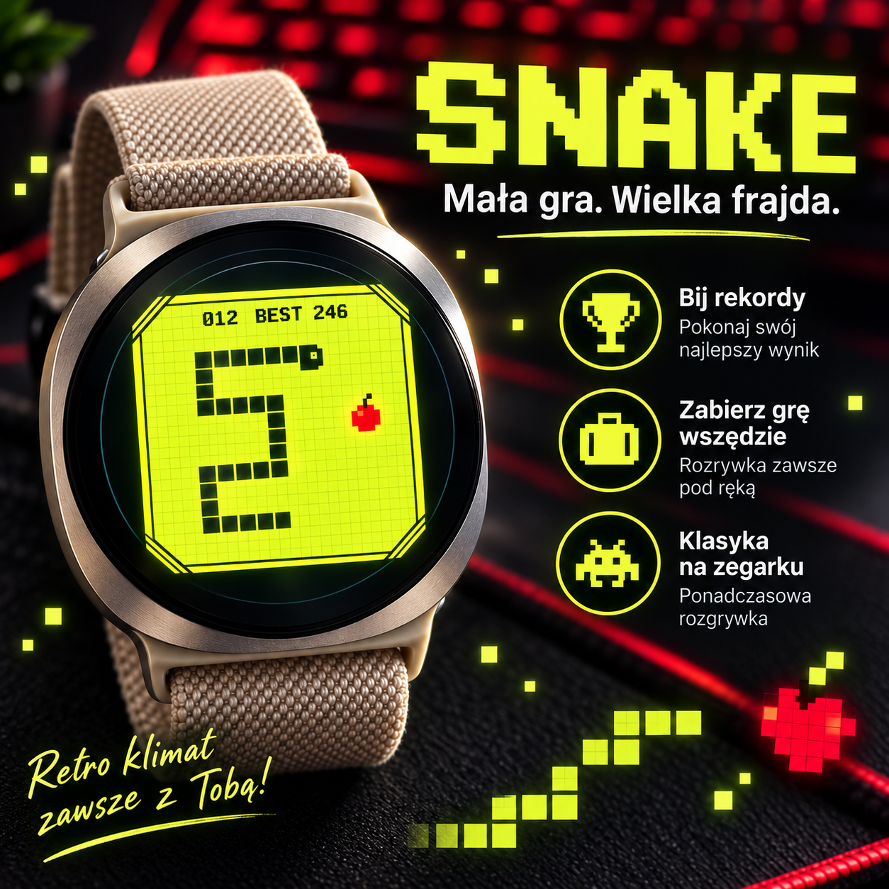
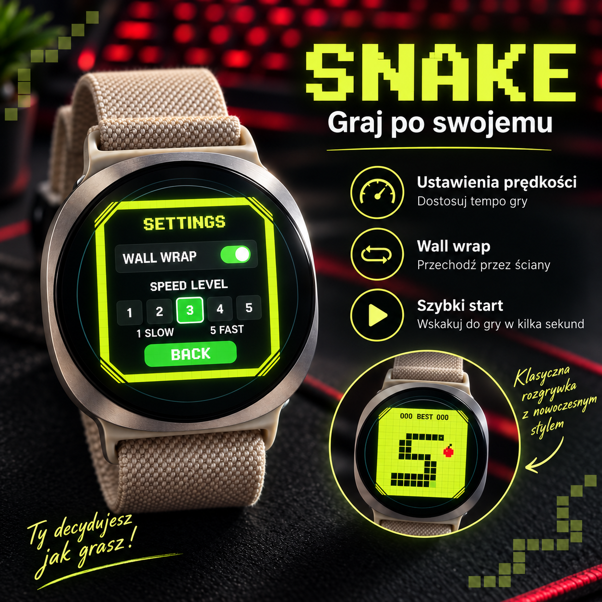
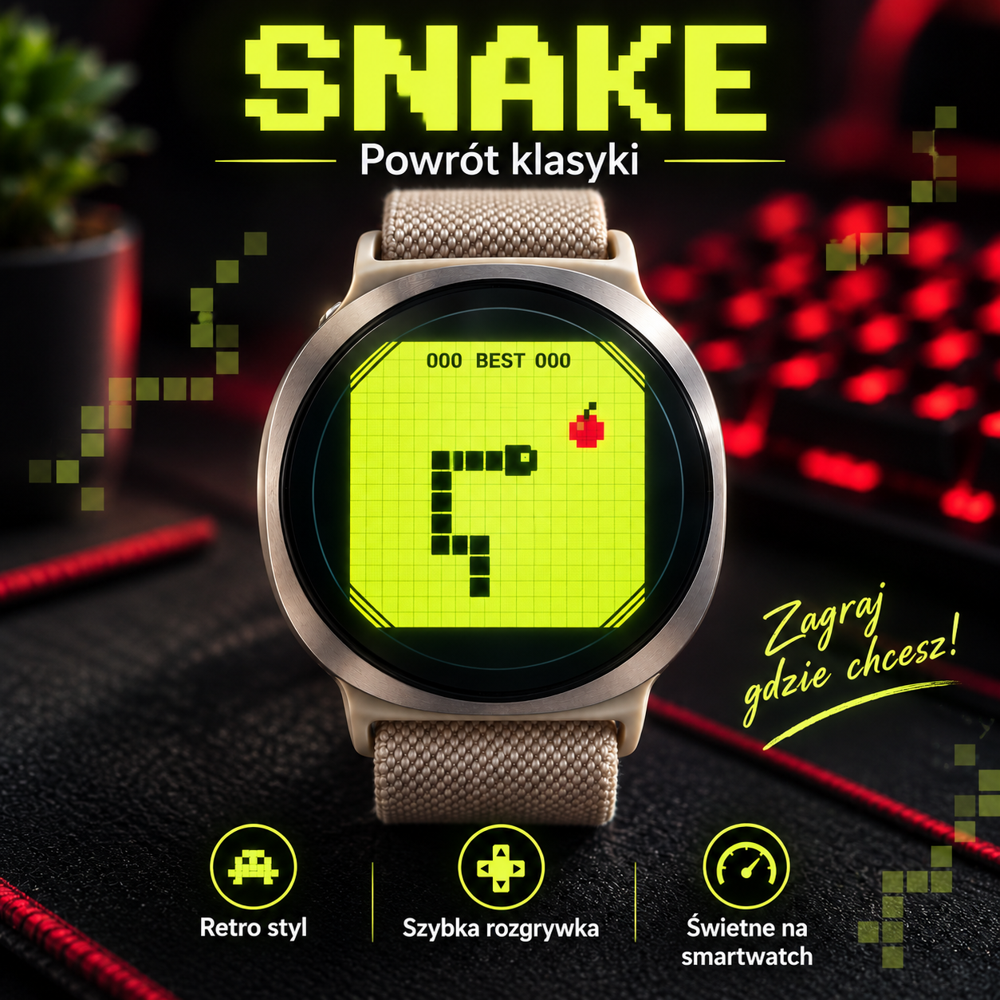

← App Android e Wear OS · App per funzione
Gioco Wear OSClassico gioco Snake per smartwatch Wear OS
SNAKE · Wear OS
Gioca al classico Snake su uno smartwatch Wear OS compatibile con controlli touch-friendly ottimizzati per il polso.
Il gioco è pensato per brevi sessioni su schermi Wear OS rotondi o quadrati compatibili. Il layout compatto e i comandi touch consentono di iniziare subito, guidare il serpente, raccogliere elementi e migliorare il punteggio senza prendere il telefono. Forma dello schermo, comandi e prestazioni possono variare in base allo smartwatch.
Screenshot






Cosa fa questa app
- Serpente Wear OS
- gioco del serpente per smartwatch
- classico serpente sull'orologio
- Gioco arcade Wear OS
Utile per chi cerca Snake Wear OS, il gioco Snake per smartwatch, il classico Snake on watch, il gioco arcade Wear OS su Wear OS.